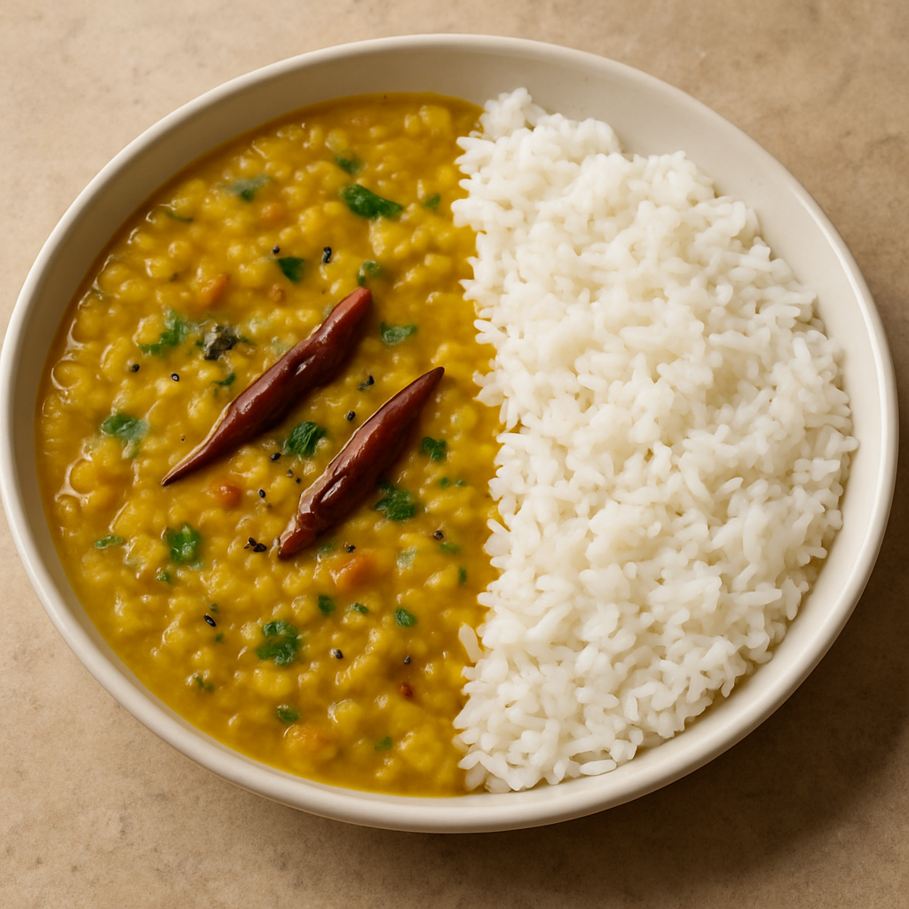

Dhall Curry

Ingredients
- 1 cup split red lentils (masoor dal) or yellow lentils (moong dal)
- 3 cups water
- 1 small onion, finely chopped
- 2 cloves garlic, minced
- 1 tsp fresh ginger, grated
- 1 medium tomato, chopped
- 1 to 2 green chilies (optional, for heat)
- ½ tsp turmeric powder
- 1 tsp cumin seeds
- 1 tsp mustard seeds
- 1 tsp garam masala (optional)
- Salt to taste
- 1 to 2 tbsp oil or ghee
- Fresh coriander leaves for garnish
- 1 dried red chili (optional, for tempering)
Instructions
- Rinse the lentils in cold water until the water runs clear.
- In a pot, combine lentils, 3 cups water, turmeric, and a pinch of salt.
- Bring to a boil, then reduce heat and simmer uncovered for 20–30 minutes, stirring occasionally. Add water if needed.
- In a separate pan, heat oil or ghee over medium heat.
- Add mustard seeds and cumin seeds. When they begin to pop, add the dried red chili (if using).
- Add chopped onion and sauté until golden brown.
- Add garlic, ginger, and green chili. Cook for 1–2 minutes.
- Stir in chopped tomato and cook until soft and the oil separates (about 5–7 minutes).
- Add garam masala (if using) and mix well.
- Combine the tempered mixture with the cooked lentils and simmer for 5–10 minutes.
- Taste and adjust seasoning as needed.
- Garnish with chopped coriander and serve hot with rice or roti.
Home